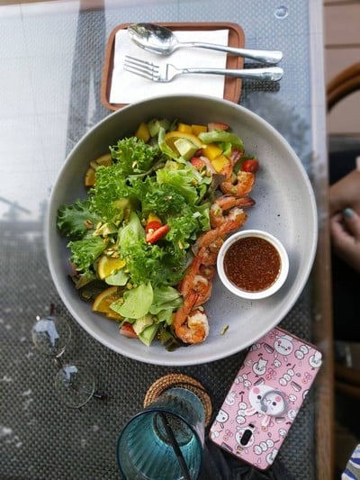
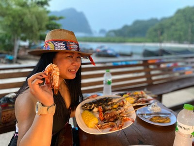
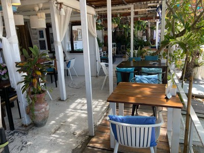
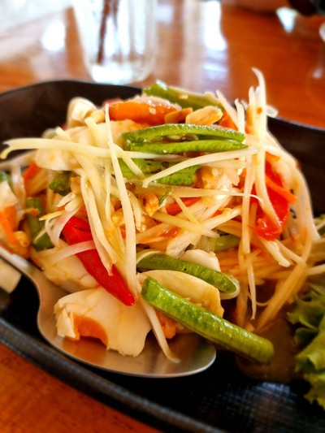
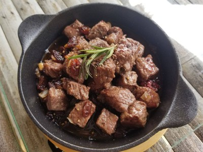
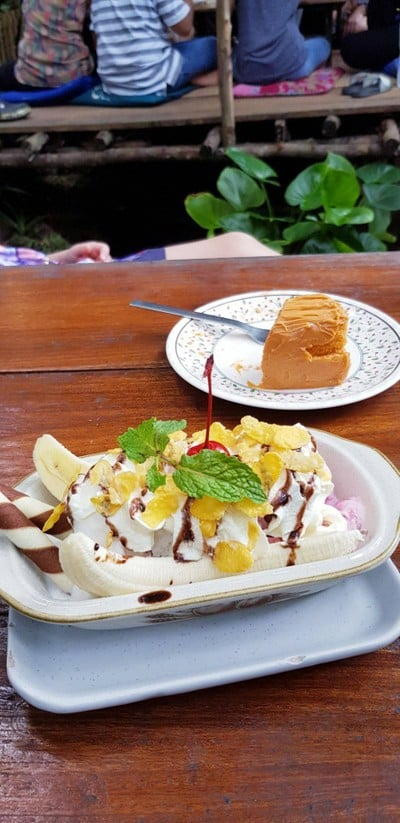
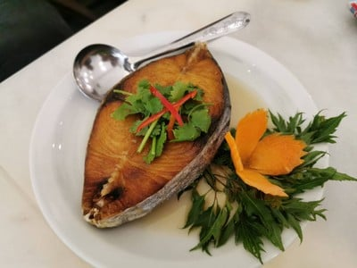
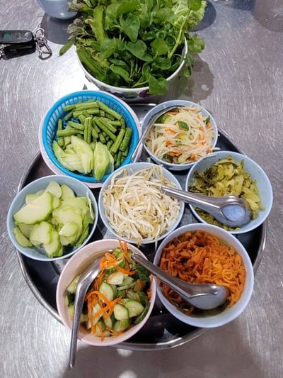
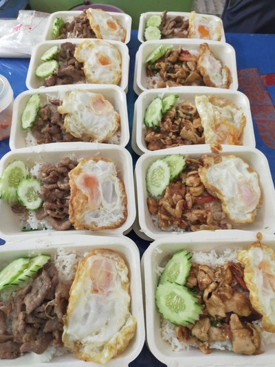

🦀 甲米 Mangrovebay 周边高分餐厅 · 77 家
围绕已订的 Mangrove Bay Krabi Beachfront Pool Villa（8/1–8/8），按「距别墅距离」分 4 档、每档内按 Google 评分从高到低排序。餐厅名可点开 Google 地图。
暑期特别 · 配套
Khao Thong / Tha Lane
Google 实时评分
共 77 家
4 档距离分层
一句话结论
别墅在甲米镇以北 ~22km 的塔兰湾（Tha Lane / Ao Thalane）红树林海岸，日常吃优先第①②档（山景咖啡 + 河海鲜，安静出片）；进城补给或 Ao Nang 夜市那天，顺路解决第③④档的名店。评分是浏览器实时抓的 Google 地图星级（主排序），另加 Wongnai 泰国本地点评做交叉验证。
🏝️ 别墅定位：Mangrove Bay Krabi Beachfront Pool Villa ·
Booking 页 ·
72 Moo.3, Khao Thong–Ao Thalane Rd, Mueang Krabi 81000 ·
坐标约 8.175°N, 98.752°E
⚠️ 地理提醒：这家别墅并不在 Ao Nang（奥南）。奥南在南边 ~50km、单程 1 小时以上。真正"近"的是第①②档；③④档是"值得专程开车"的选择——和已定的 Ao Nang 夜市、Hong Island 出海行程合并最省事。
Google = Google 地图星级（主要排序依据，实时抓取）
Wongnai = 泰国本地点评评分/评论数（交叉验证；评论数偏少属正常）
4.9+ = 顶级口碑
点击餐厅名 → 打开 Google 地图
📷 餐厅实拍（图片已下载到本仓库，非热链）
以下为部分代表餐厅的真实门店/菜品照（来源：Wongnai 商户相册，已下载到 assets/krabi-food/ 用相对路径引用）。点图可跳 Google 地图。













① 民宿步行 / 极近圈 · Khao Thong & Tha Lane 湾
别墅所在的红树林—喀斯特海岸带，最实用。以山景观景台咖啡馆 + 塔兰湾（Ao Thalane）河海鲜为主，安静、出片、适合 staycation 日常吃。
② Tubkaek / Klong Muang 海滩度假带
南边的高端海滩度假区（Banyan Tree / The Tubkaak 一带），适合看日落 + 一顿正餐，也是 Hong Island 出海码头方向。
| # | 餐厅（点击 = Google 地图） | 类型 | Wongnai 本地 | 备注 | |
|---|---|---|---|---|---|
| 1 | Ple Tam Zap Restaurant (Khlong Muang) | Thai restaurant | 4.9 | — | 顶评 |
| 2 | BaiTong Restaurant Krabi | Restaurant | 4.9 | — | 顶评 |
| 3 | Royal Tandoor Krabi | Indian | 4.9 | — | 顶评 |
| 4 | The Lake View Restaurant & Kayak (คลองหรูด) | Restaurant/Kayak | 4.9 | — | 顶评 |
| 5 | Mom's Bar and Restaurant | Bar/Restaurant | 4.8 | — | |
| 6 | The Best Restaurant | Restaurant | 4.8 | — | |
| 7 | The Tubkaak Krabi Boutique Resort (dining) | Resort dining | 4.7 | — | |
| 8 | Thanakh Gardens | Restaurant | 4.7 | — | |
| 9 | Jungle Kitchen | Thai restaurant | 4.7 | — | |
| 10 | Saing Restaurant & Bar | Restaurant/Bar | 4.6 | — | |
| 11 | Baan Tubkaek Hotel dining | Hotel dining | 4.5 | — | |
| 12 | Di Mare Italian Trattoria | Italian | 4.3 | — | |
| 13 | Anyavee Tubkaek Beach Resort dining | Resort dining | 4.3 | — | |
| 14 | The Arundina | Restaurant | 4.2 | 4.8 (4评) | |
| 15 | Tubkaek Seafood | Seafood | 4.2 | — | |
| 16 | Mama kitchen & Moonbar | Bar/Restaurant | 4.2 | — |
③ 甲米镇 Krabi Town（值得专程）
本地人气 + 夜市 + 南部泰菜老店，选择最多、性价比最高。适合补给日顺路解决一顿正餐。
| # | 餐厅（点击 = Google 地图） | 类型 | Wongnai 本地 | 备注 | |
|---|---|---|---|---|---|
| 1 | E-Kin x K.L. Boutique Restaurant | Restaurant | 4.9 | — | 顶评 |
| 2 | Woods and Hoods Krabi | Restaurant | 4.8 | — | |
| 3 | Meet Town | Restaurant | 4.8 | — | |
| 4 | Lan Lek Lek | Thai restaurant | 4.8 | — | |
| 5 | Ra Beung Lay Seafood (ระเบียงเล ซีฟู้ด) | Seafood | 4.8 | — | |
| 6 | Homlinda Restaurant | Restaurant | 4.8 | — | |
| 7 | TinGrill Restaurant | Grill | 4.8 | — | |
| 8 | Joy Beach Thai Food | Thai/Seafood | 4.8 | — | |
| 9 | Racha Seafood | Seafood | 4.8 | — | |
| 10 | Koh Klang | Seafood | 4.8 | — | |
| 11 | First Restaurant | Restaurant | 4.8 | — | |
| 12 | RuenMai Krabi (เรือนไม้) | Thai (herbal/southern) | 4.7 | 4.4 (186评) | |
| 13 | Chalita Cafe & Restaurant | Cafe/Restaurant | 4.7 | — | |
| 14 | Marni Krabi Town | Italian | 4.7 | — | |
| 15 | Kanabnam View Seafood | Seafood | 4.7 | — | |
| 16 | The River Restaurant & Bar | Restaurant/Bar | 4.6 | — | |
| 17 | Much & Mellow Cafe | Cafe | 4.6 | — | |
| 18 | Viva Restaurant | Italian/Intl | 4.5 | — | |
| 19 | Baitoey Seafood Restaurant | Seafood | 4.5 | — |
④ Ao Nang 奥南（较远，值得再去）
游客区，海滨餐厅密集。较远，建议和 Ao Nang 夜市那次行程合并。Krua Thara 是 TripAdvisor 常年榜首海鲜。
| # | 餐厅（点击 = Google 地图） | 类型 | Wongnai 本地 | 备注 | |
|---|---|---|---|---|---|
| 1 | Maison de Paris Aonang | French | 4.9 | — | 顶评 |
| 2 | Loong Wich Restaurant | Restaurant | 4.9 | — | 顶评 |
| 3 | GAIA Kitchen & Bar | Mediterranean/Bar | 4.8 | — | |
| 4 | Sound of Tree Restaurant & Bar | Restaurant/Bar | 4.8 | — | |
| 5 | Chomlay Restaurant | Thai/Seafood | 4.8 | — | |
| 6 | Curry Kitchen & Bar | Indian/Thai | 4.8 | — | |
| 7 | Kodam Kitchen branch 1 | Thai/Halal | 4.7 | — | |
| 8 | CRU Kitchen & Bar | Intl/Bar | 4.7 | — | |
| 9 | Sea Salt Krabi Restaurant | Seafood/Intl | 4.7 | — | |
| 10 | Tandoori Night's Restaurant | Indian | 4.7 | — | |
| 11 | 11/1 Thaifood & Cocktail | Thai | 4.7 | — | |
| 12 | Kiran Kitchen (Ao Nang Beach) | Indian/Thai | 4.7 | — | |
| 13 | Ton Ma Yom Thaifood | Thai | 4.6 | — | |
| 14 | Rabiangsuan Restaurant | Thai | 4.6 | — | |
| 15 | Carnivore Steak & Grill | Steak/Grill | 4.6 | — | |
| 16 | Family Thai Food & Seafood | Thai/Seafood | 4.6 | — | |
| 17 | Lae Lay Grill | Seafood/Grill (view) | 4.4 | 4.1 (134评) | |
| 18 | Krua Thara (ครัวธารา) | Seafood (famous, Ao Nang/Nopparat) | — | 3.9 (149评) | TripAdvisor top-ranked Ao Nang seafood |
📊 数据来源与口径
- Google 地图星级：用真实浏览器 session 抓取（未登录「限量视图」下评论数被隐藏，故主表以星级为准）。
- Wongnai（泰国本地点评站）：交叉验证。它偏本地口味、评论数量级小，跟 Google 有出入属正常——例如 Krua Thara 在 Wongnai 只有 3.9，但在 TripAdvisor 是奥南常年榜首海鲜。
- 车程：按真实路网的本地经验估算（自驾）。海鲜与观景餐厅建议出发前电话确认营业时间，雨季部分观景/河畔店会临时歇业。
- 共 77 家 · 生成于 2026-07-07。